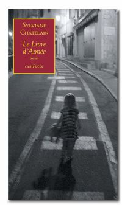

"J'ai posé ma tête entre mes bras
repliés sur la table. Les mots se cachent. C'est un jeu, ils
se cachent et je les cherche. Un jour ils se lasseront et moi aussi. Je
le crains, parfois je l'espère. Mais il est encore trop
tôt. Je les cherche et je les attends. Un mot, un seul
quelquefois et d'autres le rejoignent. J'attends qu'ils m'emportent, me
déposent sur le visage, les lèvres d'inconnus qui
meurent si je ne les rejoins pas ou qui me suivent et me poursuivent,
ne s'en vont pas avant que je n'aie dit et compris ce qu'ils avaient
à me dire.
Rien n'a changé. Si pourtant: la montagne, son corps de
baleine échoué devant moi a le dos blanc. C'est
tôt pour la première neige.
Ils me font signe, je m'approche, au dernier moment ils se
dérobent. Ils veulent m'entraîner quelque part,
mais je résiste, je ne veux pas de n'importe quelle route,
j'ai le droit de choisir, de refuser celles qui sont trop dangereuses,
qui sont au-dessus de mes forces. Alors ils me tournent le dos avec un
haussement d'épaules. C'est un jeu difficile, un peu cruel.
Je sais qu'ils reviendront. Ils reviennent toujours. Ils savent que je
ne peux pas me passer d'eux, que je finirai par les suivre. Ils sont
patients. J'entends leurs froissements d'ailes, leurs rires qui
ressemblent aux cris confus des oiseaux à l'aube. Ils
décrivent leurs tours loin au-
dessus de moi, ils ne me perdent pas de vue. Je vais céder,
reprendre ma plume. Mais je ne vois pour l'instant que ce visage, le
visage d'une femme, derrière la vitre embuée d'un
car, qui regarde défiler le paysage, occupée par
je ne sais quelles pensées."
Réédition camPoche 35, 2009
Prix Bibliothèque Pour Tous 2003
Prix 2004 de la Commission de littérature du canton de Berne
(également pour l'ensemble de son œuvre littéraire)